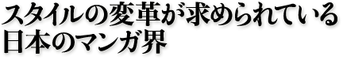

 |
『マンガの力』著者 夏目房之介インタビュー |
マンガ批評というジャンルを確立させたのは、まちがいなく夏目房之介氏の功績だ。批評としてのクオリティを保ちつつ、エンターテインメント性をも兼ね備えた夏目氏のマンガ論は、マンガについて語ることの面白さを一般に認知させたのみならず、元となるマンガ作品そのものの地位をも向上させた。その夏目マンガ論の集大成とも言うべき『マンガの力』をまとめた氏は、これからのマンガの方向性をどうみているのか。いまや海外のメディアからも注目される稀代のマンガ伝道師＝夏目房之介が、90年代のマンガをめぐる状況について、マンガ作品の著作権問題について、行き詰まりをみせるマンガの市場について語った。 |
■マンガ市場の飽和がマンガ批評の定着をもたらした ――『マンガの力』はマンガ文庫などの解説として書かれた文章が中心ですね。小説やノンフィクションでは文庫解説を集めた本は少なくないけれども、マンガ文庫の解説を集めた本は珍しい。新作や新刊の批評とは違って、時を置いて熟成した視点で書かれた文章を集めたところが、非常におもしろいと思いました。この本はどんなところから成立したんでしょうか。 夏目 92年に『手塚治虫はどこにいる』（ちくま文庫）という本を書きました。それ以前も『夏目房之介の漫画学』（ちくま文庫）や『消えた魔球』（双葉社／新潮社）など、マンガ批評の本は書いていたんだけど、スタンスとしてはかなり娯楽寄りのものでした。というのは、マンガについての文章は、面白くなければ絶対に読んでくれないと思っていましたから。ところが手塚治虫さんが亡くなったとき、それまで思っていたことを書こうとしたら、僕にはそれを娯楽にする力がないことに気づいた。思わずシリアスになっちゃったんですね。だから『手塚治虫はどこにいる』を出したときは不安でした。これやったら食えないぞ、と。 ――それは「図らずも」というところなんでしょうか。 夏目 図らずも、ですね。それを目指していたわけじゃないから。だって、儲からないとわかっていますから。僕としては、「面白おかしいことをやりながら、片隅できちんとしたものができればいいな」と思って始めただけです。復刻・文庫ブームで解説の需要がでてくるとは予想していなかった。 ――たしかに90年代になって、積極的にマンガが語られるようになりました。その理由はなんだったんでしょう。 夏目 91年あたりで、出版界全体の成長が頭打ちになります。出版のなかでも突出した勢いで伸びていたマンガというものも、そこで打ち止めになります。これはバブルが崩壊したという経済全体の背景もありますが、完全に市場が飽和状態になったということだと思います。新しいものが生まれなくなった、開拓時代が終わったんだからやむを得ないところではあると思いますね。 ――マンガの出版点数が増え、広がって細分化していって、読者としては何を読んでいいのかわからない状況が長く続いていました。小説であれば過去の名作は文庫として残っていって、蓄積が行われている。新刊書店になくても、図書館に行けば見られる。ところがマンガはそうはいきません。常に最新のものしか読めない。その状況がこの10年間で変わってきましたね。少し前のマンガは古本屋や新古本屋で、もっと前の名作はマンガ文庫で、あるいは新刊もマンガ喫茶でと、いろいろ過去のものも読めるようになった。批評を読んで興味を持ってマンガへという回路が成立しました。マンガも批評と表現が両輪で動く時代になったという気がします。 夏目 そうですね。ただ、日本の文学が歩んだような道をマンガに歩んで欲しくないなと僕は思っています。マンガ批評も文芸批評のようになって欲しくない。マンガは商品であり、商業主義によって生みだされるものであるから、現在のものが多いのは当然です。過去のものを読もうとすると、図書館ではなくマンガ喫茶になってしまうところが、これまたマンガらしい。ですから批評も、文芸批評の近代文学史的なものではなくて、もっと多様なものであって欲しいし、そうなっていると思います。単純に知的市民権を得ただけではなく、マンガがマンガとして自分で形を作っていくと考えたい。
■海外からも注目される日本マンガの面白さ ――『マンガの力』に収められた文章には、どれも常に「マンガとはなんなのか」という問いが底に流れている。たとえば冒頭に置かれた、「マンガはヘタでも面白い」という文章が象徴的です。ここで夏目さんは鄭問（チェンウェン）の『東周英雄伝』（講談社文庫）と青木雄二の『ナニワ金融道』（講談社）の比較をしながら、絵のうまさとマンガの面白さについて考察している。うまくてもダメ、ヘタでも面白いという、マンガの力の不思議さがありありと見えてきます。 夏目 これが映画だったら、たんにＢ級志向になってしまう。「明らかに映画作りはヘタなんだけど、ヘンにおもしろい」とかね。でも、それは面白がり方を批評しているにすぎない。本でいうとトンデモ本とかね。ところがマンガというのは、ヘタでも本当におもしろいんですよね、困ったことに。小説や映画でやると、あざとかったり恥ずかしいことが、マンガだとできる。この不思議さがどうしてもある。僕は表現論として、マンガ表現の構造を解こうとしてきているけれども、まだまだわからないことがある。それがまたおもしろいところでもあるんですが。 ――１枚のポスターで見ると日本のマンガ家よりはるかにうまい海外の作家がいる。しかし、だからといって「マンガ」としては魅力的ではない。マンガの力は、この「うまい／ヘタ」を超えたところにあるんですね。 夏目 そうなんです。展覧会にパネルで並べても鑑賞に堪えられる海外の作家がいる。しかし、それを日本人がマンガとして読むと、あんまりおもしろくない。これは半分は文化の違いによるのかもしれないし、残りの半分はそのマンガが本当におもしろくないのかもしれない。そこんところはよくわからない。ところが日本人のマンガをパネルにして展覧会で並べるとどうかというと、これは面白くないんですよ。また、絵画として鑑賞に堪えるマンガも日本にはほとんどない。じゃあ、マンガの面白さってなんなのか、というところに帰ってくる。 ――世界のなかのマンガですね。 夏目 僕自身もいままでと違う見方ができるから、すごくスリリングで刺激的です。あとはお金がついてきてくれると文句はないんですけど。 ――だめですか。 夏目 はっきりいって儲からない。来年、某社の書き下ろし文庫で、念願の東アジアのマンガ状況を調べて書き下ろします。前々から、香港、台湾、韓国、上海の、日本の影響を受けて発達しつつあるマンガの状況を取材して書きたかった。でも、これをやるとなると、取材に１カ月、執筆に２カ月。その間、他の仕事ができないから食えない。どんどん貧乏になっている。 夏目 しかし、現地取材は大事なんです。現地に行って見てみると、日本でマンガを見ながら「なんで違うんだろう」と考えるのとまったく違う答えが出たりする。マンガって、紙に印刷して綴じたものという形態は同じだから、どこの国でもみんな同じに見えるでしょう？ ところが作られているシステムはまるで違うんですよ。たとえば香港だったら、編集者というのはいないんですから。 ――えっ、そうなんですか。 夏目 作家は会社が丸抱えだから出版社の社員。で、マンガづくりは分業です。ストーリーは会社の会議で決まる。 ――マーベルなどアメリカのコミック生産に似ていますね。 夏目 そうです。アメリカのほうに近い。でも、彼らはアメリカではなく日本のマンガみたいにしたいと言っている。でも、日本の出版社に近いシステムでやろうとしている新しい会社もある。でも、そういうのをみていると、なぜコマがこうなるのか、絵がこうなるのかがわかってくる。それは実際に取材しているとわかってくるんです。
■マンガ作品の引用許諾問題について ――ところで、先日、『ゴーマニズム宣言』の引用が裁判で合法的だと認められまし た。もっとも小林よしのり側は控訴しましたから、まだ判決が確定したわけではあり ませんが。夏目さんは前々からいちいち許諾を取らずに引用して批評するスタイルを とっていらっしゃいますね。 夏目 いいえ、前々からではないんですよ。少なくとも94年に『マンガの読み方』 （別冊宝島ＥＸ）と『手塚治虫の冒険』（小学館文庫）を書いたときは、作家側の許 諾を得ていますから。だけど、あのあたりで煮詰まったんです。そのあと、自分なりに著作権の勉強をして、一昨年、『マンガと「戦争」』（講談社現代新書）を出した ときは、許諾を得ずに出しました。でも僕は、基本的なスタンスとしては是々非々な んです。 ――そうなんですか。 夏目 本というのは僕だけのものではありません。仮に僕が「これは許諾を取らないでやろう」と言ったところで、出版社の方々がどの程度覚悟してくれるかという問題があります。同じ出版界の中ですから、それぞれ利害関係もある。僕もあまりそのことに関してごり押しはしない。 ――「夏目房之介もやってるじゃないか」と。 夏目 そう。僕は基本的に新聞のコメントはやらないんです。好き勝手にやられちゃうからね。だけど、僕のいる場所で何かコメントしておかないといけないのかなと思って、例外的にコメントしました。「この裁判の経緯はよく知らないけど、ただ引用に関しては、いいんじゃないですか 」と。前段はカットされて、後半だけ載ったわけですけどね。 ――マンガはコマの絵と文章の組み合わせなんですから、それを批評するときに引用できないというのは、困りますよね。
■システムの変革が求められている ――最後にひとつ。いま、新刊書店でのマンガの売り上げがかなり落ちています。雑誌の落ち込みもひどいし、新刊本も売れなくなってきている。挙げられている理由はいくつかあります。ブックオフを代表とするリサイクル型新古本屋の登場、マンガ文庫の充実、ビニールパックなどです。新古本屋に新刊の読者を奪われた。読者は新刊に飛びつかなくても、マンガ文庫で面白い旧作をいくらでも読めるようになった。新刊を追いかけなくていいから、マンガ雑誌でしょっちゅう連載をチェックする必要がなくなった。また、立ち読みと汚損防止のためのビニールパックで中身を確かめられなくなり、読者は敬遠するようになった。流通面から見たマンガの雑誌や新刊が売れなくなった理由はざっとこういうところですが、原因はこれだけではないようにも思います。夏目さんはどう思われますか。 夏目 流通面に関していわれることは、まったくおっしゃるとおりだと思います。流通も構造改革しないとこの先はいけないと思います。だからといって、どういうふうにすればいいかというのは難しいんですけどね。 ――そうですか。 夏目 これが雑誌が売れなくなった理由として大きいのではないか。それまでの成長を支えてきた巨大な連載が終わったとか、いろんな理由は言えるんだけど、一方で、30代の人たちの変化があるんじゃないかと僕は思います。 ――厳しい未来ですね。 夏目 そうですね。決して薔薇色ではない。ただ、基本的になくなるということはないので。ここまで大きくなったマンガが、一気になくなることはありえない。だからどこでどういうふうにソフトランディングするかがいまの課題だと思います。システムが金属疲労を起こしていてスタイルの変化が求められているとき、マンガ家であれ編集者であれ流通業者であれ、どこかでスタイルの変革をする人がいないと見えてこないんじゃないでしょうかね。 ――それは楽しみです。どうもありがとうございました。 |